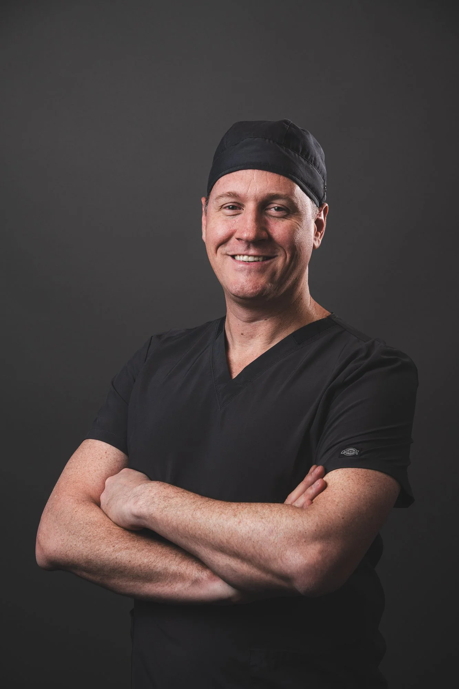
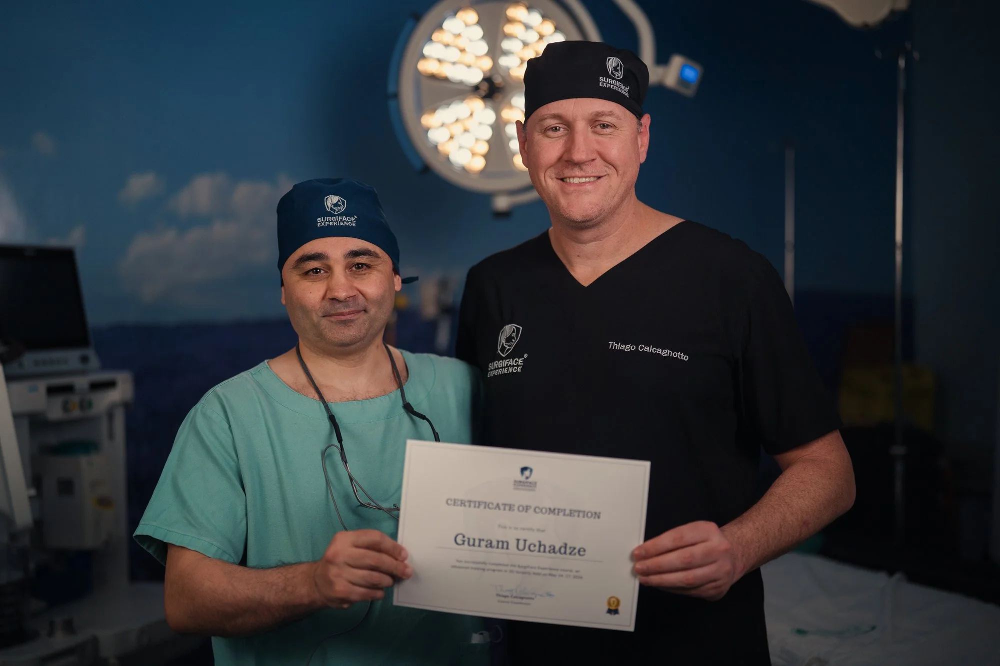
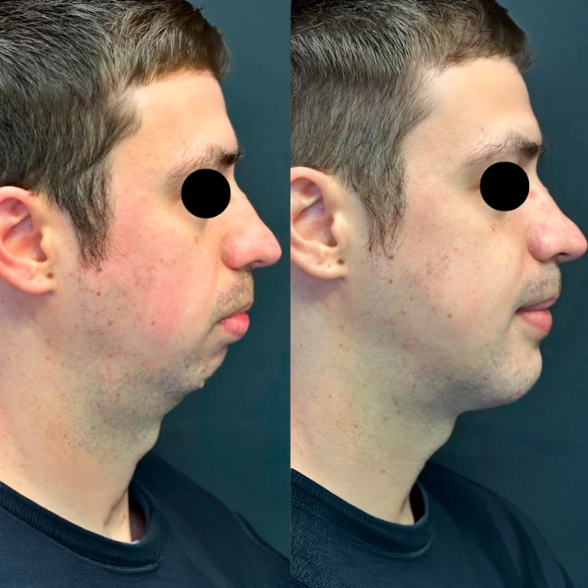
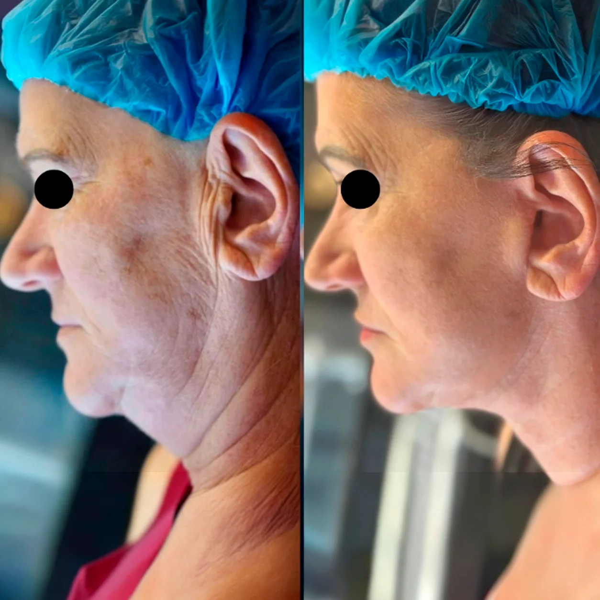
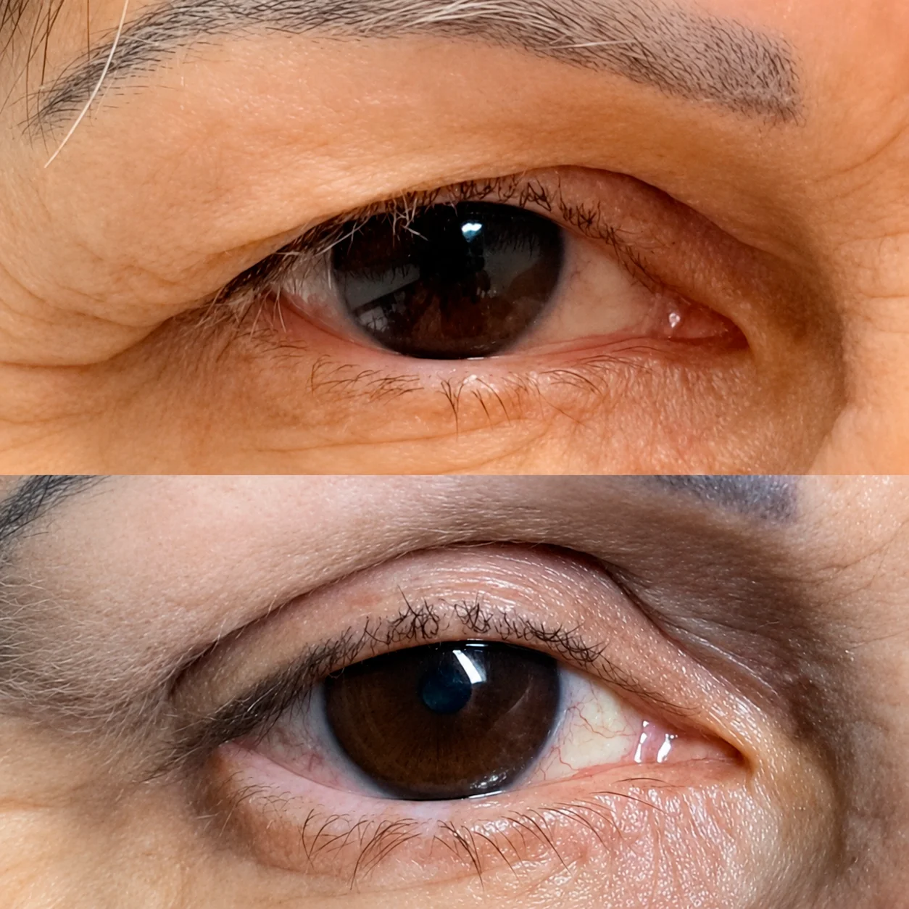

“Eu não opero rostos, opero histórias.” Essa frase resume 23 anos de carreira construída na cirurgia bucomaxilofacial, desde a graduação na UFRGS em 2001. Foi ainda na faculdade, entre monitorias e projetos de pesquisa, que a especialidade se definiu como caminho.
O mestrado veio em 2007. O doutorado, em 2018. Entre um e outro, em 2011, fundei um Serviço de Referência em Igrejinha (RS), hoje um dos principais centros do Brasil na especialidade. Mais de 200 alunos formados. Já passei por cargos de liderança na ABO-RS, idealizei cursos como o Surgiface Experience e escrevi o livro “Sabor e recuperação” para auxiliar pacientes nesse momento.
Mas acima de tudo, a convicção construída ao longo desses anos: toda cirurgia começa numa conversa, sobre expectativas, medos e o resultado que realmente faz sentido para quem está ali, na cadeira, buscando mais do que um procedimento.

Nas minhas mãos. Não existe procedimento de alta complexidade sem planejamento minucioso. Cada caso é estudado como se fosse o único, porque para o paciente, é. Desde a primeira consulta até o último retorno, o que está em jogo não é apenas a técnica: é a confiança de alguém que entrega o rosto e a saúde nas minhas mãos.
É por isso que o ensino também faz parte do caminho. Formar novos cirurgiões é multiplicar esse nível de cuidado, garantindo que mais pessoas tenham acesso a tratamentos seguros, eficazes e inovadores, sem atalhos, sem pressa, sem perder de vista que cada paciente é único.
Corrige a posição dos maxilares para melhorar a respiração, a fala, a mastigação e a harmonia do rosto. Resultado funcional e estético em um único procedimento.
Reconstrução facial após traumas, tumores ou deformidades congênitas. Restaura a anatomia e a função com planejamento tridimensional personalizado.
Modelagem da gordura facial para um contorno mais definido e rejuvenescido. Resultado natural com técnica minimamente invasiva.
Remoção das bolsas de Bichat para afinamento e harmonização do rosto. Realça a estrutura facial com um contorno mais definido e equilibrado.
Cirurgias de sisos e extrações dentárias · Cirurgias de cistos e tumores · ATM, artrocentese e artroscopia · Cirurgias gengivais · Botox e preenchimento · Lifting palpebral e facial · Enxertos ósseos e implantes dentários · Biópsias · Procedimentos sob sedação consciente

Correção de assimetria facial com melhora funcional e estética.

Definição do contorno mandibular com rejuvenescimento natural.

Rejuvenescimento da região dos olhos com remoção do excesso de pele e reposicionamento dos tecidos para um olhar mais descansado e natural.
Doutorado e mais de 23 anos de experiência dedicados à cirurgia bucomaxilofacial de alta complexidade.
Cada paciente é único. Respeito, escuta ativa e cuidado personalizado em todas as etapas do tratamento.
Referência em procedimentos de alta complexidade com resultados clínicos comprovados e tecnologia de ponta.
Coordenador de cursos de especialização com mais de 200 alunos formados e atuação na ABO-RS.
Serviço de Referência em CTBMF em Igrejinha (RS), reconhecido como um dos principais centros do Brasil.
Melhores equipamentos do mercado e técnicas minimamente invasivas com sedação consciente para máximo conforto.
Na primeira consulta é realizada uma avaliação completa, com exame clínico detalhado e solicitação de exames de imagem quando necessários. O Dr. Thiago explica todas as opções de tratamento e esclarece dúvidas pessoalmente.
O tempo varia conforme a complexidade do caso. Cirurgias de sisos podem levar de 30 minutos a 1 hora, enquanto cirurgias ortognáticas podem demandar de 4 a 8 horas. O Dr. Thiago discutirá todos os detalhes no pré-operatório.
Todos os procedimentos são realizados sob efeito de anestesia local e/ou sedação consciente, garantindo máximo conforto. No pós-operatório, a equipe prescreve medicação adequada para controle da dor.
O tempo de recuperação depende do procedimento. Cirurgias menos invasivas têm retorno às atividades em poucos dias. Cirurgias ortognáticas requerem um período maior, com acompanhamento próximo da equipe.
Muitos procedimentos de Cirurgia e Traumatologia Bucomaxilofacial são cobertos por planos de saúde, especialmente os de caráter funcional. O Dr. Thiago auxilia com a documentação necessária para solicitação de autorização junto ao seu plano.
O Dr. Thiago atende pessoalmente cada paciente e tira todas as suas dúvidas antes de qualquer procedimento. Cirurgia de alta complexidade exige confiança — e ela começa com uma conversa franca e sem pressa.
Fale com Dr. Thiago(51) 97812-238